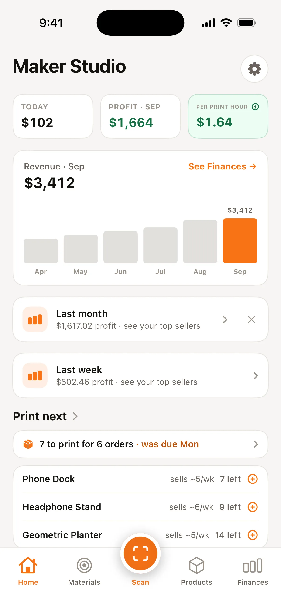
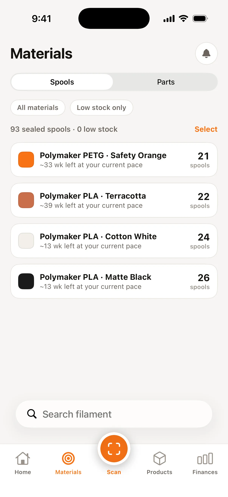
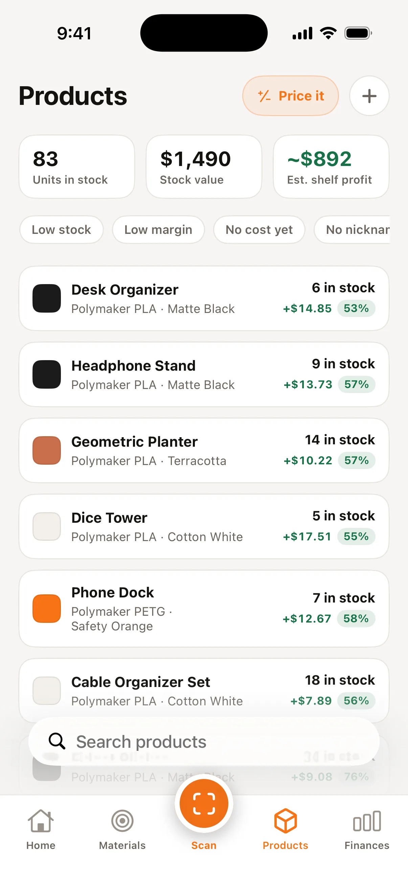
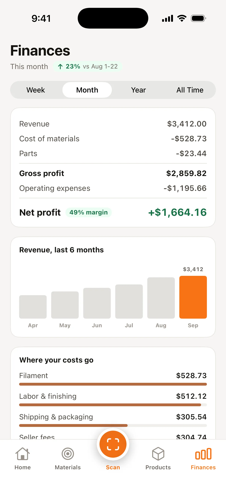

Built by an Etsy seller with 3,000+ sales
Your filament tracker knows how much plastic is left. SpoolPilot knows how much money you made.
Free on the App Store · iPhone
Prefer email?
Occasional product updates. No spam, and a person reads every reply.
“It feels very convenient and intuitive, and everything is easy to understand without much explanation.”— Angelina · Gumi Print House on Etsy




Between prints: today's take and the month's profit at a glance.
The camera reads print time and grams off the slicer screen, then prices the print — fees and labor included.
Sealed spools counted on the shelf, no weighing, with weeks of stock from your real sales pace.
The sale, the print, the empty spool — they happen away from a computer. A native iPhone app catches them right there, so “I’ll log it later” never turns into never.
“Overall, I really enjoyed testing the app! It feels very convenient and intuitive, and everything is easy to understand without much explanation. I especially liked that you can choose any color and connect your slicer — those features are really useful for 3D printing.”— Angelina · Gumi Print House on Etsy
It does — on the numbers you remember to type. SpoolPilot logs the sale, the real fee, and the grams the moment they happen. Nothing to enter, nothing to reconcile.
Read from your Etsy payment account, order by order, and reconciled against what Etsy actually deposits. Shipping your buyer paid passes straight through; when you ship free, the label is counted as the real cost it is.
It has no idea what your electricity, packaging, or time cost. Or what Etsy takes. Scan the slicer screen and SpoolPilot adds all four, then tells you what to list the print at.
No forced stock counts. Low-stock flags appear only where you actually shelve inventory.
A queue of what's about to run out, ranked by your real sales pace. Tap a row to log the run.
Kits sell from pre-assembled stock first, then assemble themselves from component parts, with the cost itemized live.
SpoolPilot counts the money.
| SpoolPilot | Filament trackers | Craftybase / spreadsheets | |
|---|---|---|---|
| Primary focus | 3D-print business profit | Remaining filament weight | General handmade tracking |
| Data entry | Automatic Etsy order sync | Manual or local print server | Manual spreadsheet typing |
| Form factor | Native iOS, shop-floor mobile | Desktop / local web | Desktop web |
| Seller fees | The exact fees Etsy charged, itemized per order | — | Estimated percentages |
| Financials | Full P&L, any month, whole history | None | Basic manual COGS |
Etsy's published US fees, computed live. In the app the fees aren't computed at all — they're read from your payment account, order by order, with materials and labor subtracted too.
Before filament, electricity, and labor. The app subtracts those from your real ledger fees. Full calculator →
Everything above ships today. Here's what landed recently, and what's next.
Shipped
Next
It starts with what the buyer actually paid, then subtracts the real costs one by one: the exact fees Etsy charged on that order — transaction, payment processing, listing, and Offsite Ads, read from Etsy’s own ledger, not estimated — then the filament by grams at your price per kilo, the electricity for the print time, packaging, and your labor if you set an hourly rate. What’s left is the profit on that order. For a print you haven’t sold yet the calculator estimates the fees instead, and anything estimated is marked with a “~”.
Craftybase is a full manufacturing-inventory suite built for the desktop; a spreadsheet only holds the numbers you remember to type. SpoolPilot is a native iOS app focused on one question — what did this Etsy order actually make you — and it logs the sale, the real fee, and the filament grams the moment they happen. Nothing to enter, nothing to reconcile.
SpoolPilot is free to download. Filament inventory, the pricing calculator, and manual tracking are free with no limit. Pro adds unlimited order sync, the full profit-and-loss, and weeks-of-stock forecasts — $12.99 a month or $99.99 a year, with a 7-day free trial on the yearly plan.
Yes. Your data lives on your iPhone and your own iCloud — nothing is uploaded to us, there is no account, and the app contains no analytics or tracking SDKs. SpoolPilot connects to Etsy read-only (it can’t change your shop), and it only ever reads your shop’s numbers, never your buyers’ personal details. This website does count visits, so we know which pages people read; it never receives anything from the app. More in the privacy policy.
The camera reads print time and grams from Bambu Studio, OrcaSlicer, and PrusaSlicer screens. Sales sync works with Etsy today. SpoolPilot is a native iPhone app (iOS), not a web dashboard.
Because I got tired of guessing. I’m Sean, and I run Opus Design Company on Etsy — over 3,000 sales of 3D prints. I could never get a straight answer on what an order actually made after Etsy’s fees, filament, and my time. Spreadsheets fell behind, and every other tool wanted a desktop. So I built the one I wanted: real profit, in my pocket, right at the printer. SpoolPilot is published by Opus Design Group LLC.